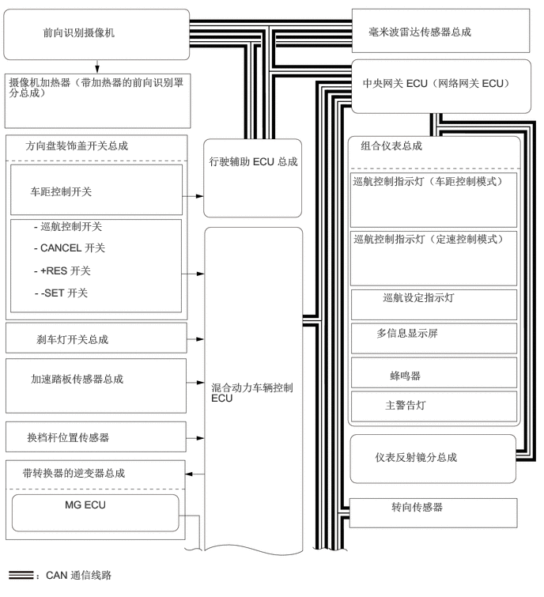

0.563,0.344 2.417,0.792
1.844,0.438
10
false
前向识别摄像机
0.115,1 2.479,1.521
2.354,0.51
10
false
摄像机加热器（带加热器的前向识别罩分总成）
0.333,1.833 2.281,2.125
1.938,0.281
10
false
方向盘装饰盖开关总成
0.396,2.438 2.531,2.833
2.125,0.385
10
false
车距控制开关
0.448,2.896 2.24,3.146
1.781,0.24
10
false
- 巡航控制开关
0.448,3.177 1.708,3.417
1.25,0.229
10
false
- CANCEL 开关
0.448,3.479 1.51,3.708
1.052,0.219
10
false
- +RES 开关
0.458,3.771 1.51,4
1.042,0.219
10
false
- -SET 开关
0.479,4.385 2.302,4.625
1.813,0.229
10
false
刹车灯开关总成
0.406,4.906 1.99,5.469
1.573,0.552
10
false
加速踏板传感器总成
0.354,5.677 2.083,5.948
1.719,0.26
10
false
换档杆位置传感器
0.292,6.146 2.385,6.396
2.083,0.24
10
false
带转换器的逆变器总成
0.854,6.563 1.677,6.896
0.813,0.323
10
false
MG ECU
0.469,7.49 2.604,7.708
2.125,0.208
10
false
：CAN 通信线路
2.75,2.042 4.094,2.458
1.333,0.406
10
false
行驶辅助 ECU 总成
2.781,5.021 3.938,5.75
1.146,0.719
10
false
混合动力车辆控制 ECU
4.938,5.938 6.719,6.219
1.771,0.271
10
false
仪表反射镜分总成
5.156,6.594 6.292,6.896
1.125,0.292
10
false
转向传感器
5.073,5.25 6.854,5.531
1.771,0.271
10
false
主警告灯
5.135,4.865 5.885,5.146
0.74,0.271
10
false
蜂鸣器
4.958,4.302 6.625,4.542
1.656,0.229
10
false
多信息显示屏
5.042,3.833 6.708,4.073
1.656,0.229
10
false
巡航设定指示灯
4.656,3.063 6.75,3.594
2.083,0.521
10
false
巡航控制指示灯（定速控制模式）
4.646,2.302 6.708,2.865
2.052,0.552
10
false
巡航控制指示灯（车距控制模式）
4.75,1.833 6.688,2.104
1.927,0.26
10
false
组合仪表总成
4.771,1.01 7.042,1.604
2.26,0.583
10
false
中央网关 ECU（网络网关 ECU）
4.854,0.333 6.74,0.771
1.875,0.427
10
false
毫米波雷达传感器总成